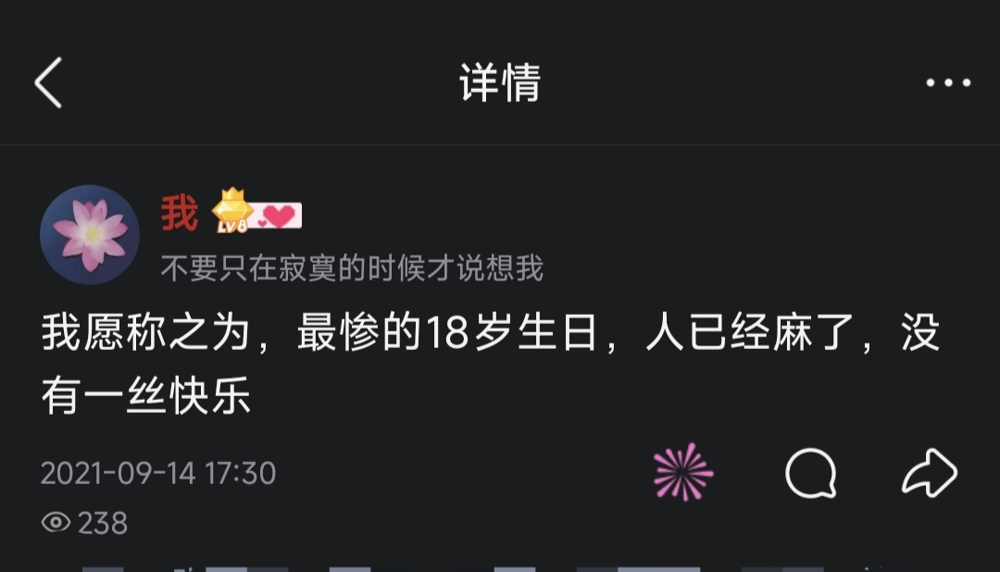

洛书瑶
@luoshuyao
@Namida8964 生日快乐呀。看到这段话就好像看到了曾经的自己呢。没关系，逃避懦弱都是可以的，很多人都是这样迷迷糊糊的走到这一天的。至少你能发出来已经足够勇敢了，我当年都不敢跟任何人说……
18岁也不是成为大人的标志，继续迷迷糊糊，继续当个孩子也是可以的呀，不用对自己要求太高了

愛言葉
@Namida8964
反正发这里也没人在意吧，今天是我的成年生日，我18岁了
心情如下 https://t.co/eg2vWp4MaX